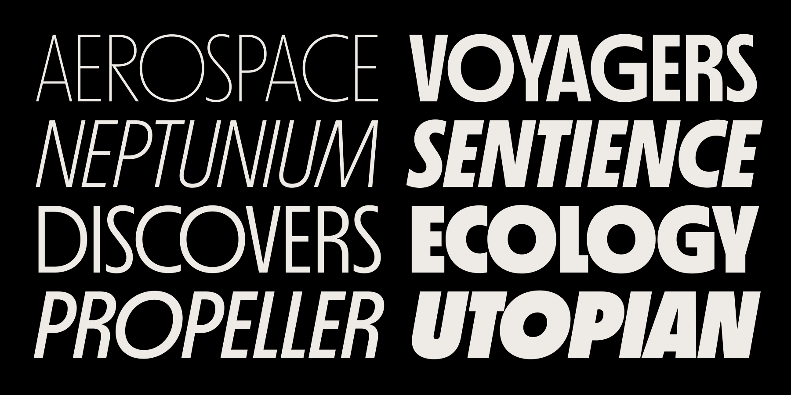

A typeface based on sci-fi paperback covers from the 1970s (2020–21)
Originally released as two styles via Future Fonts in April 2020; subsequently expanded and published in August 2021 as a family of sixteen styles. Available for licensing at Mass-Driver.
MD Nichrome is a spiritual continuation of the research I started for M74.

Specimen · A combination of weights, stylistic sets & oblique styles.